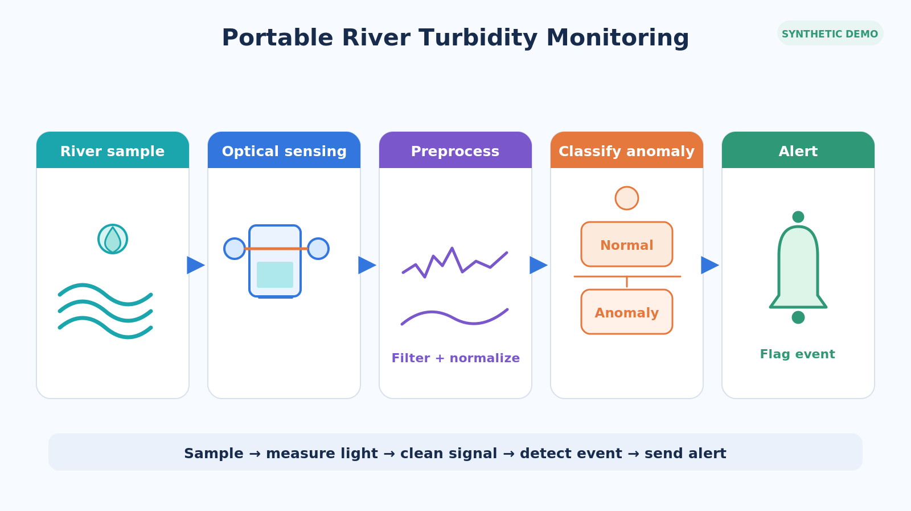
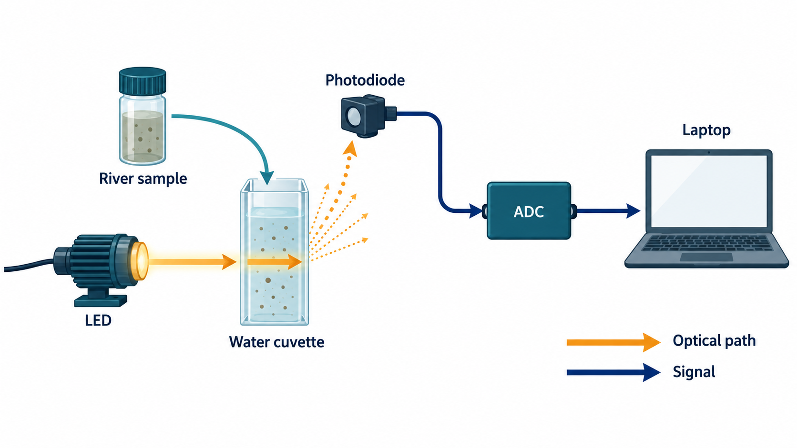
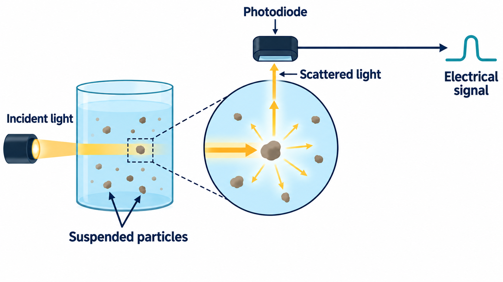
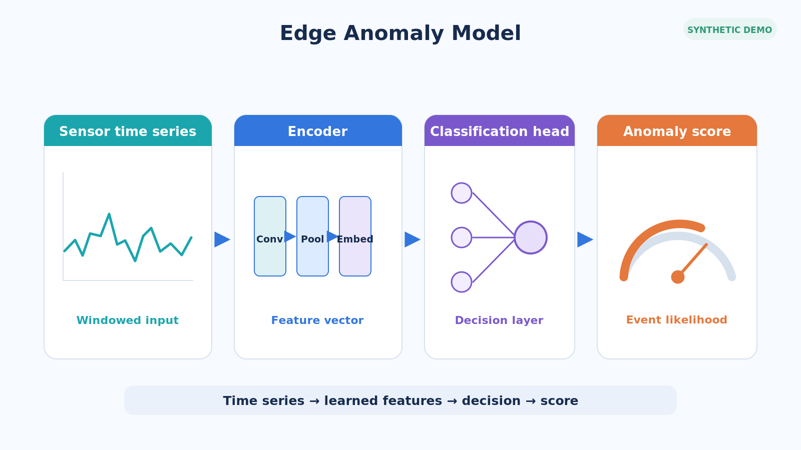
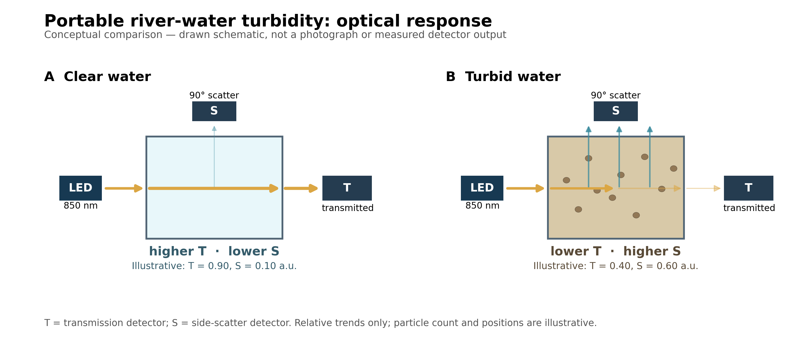
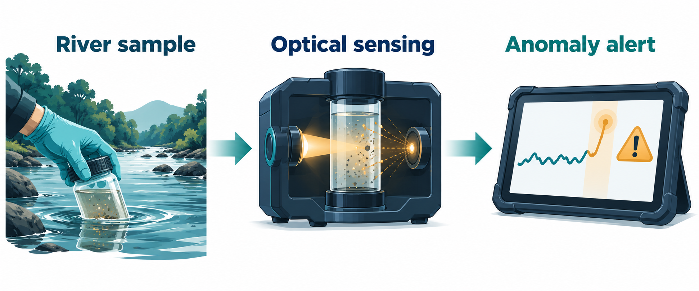
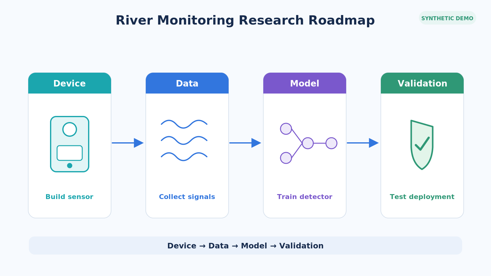
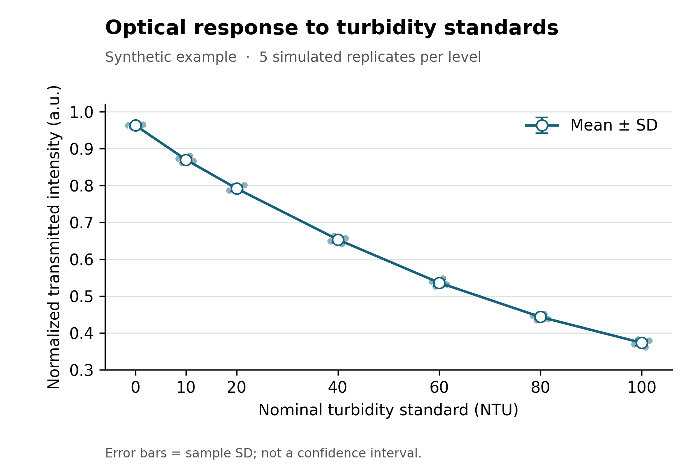
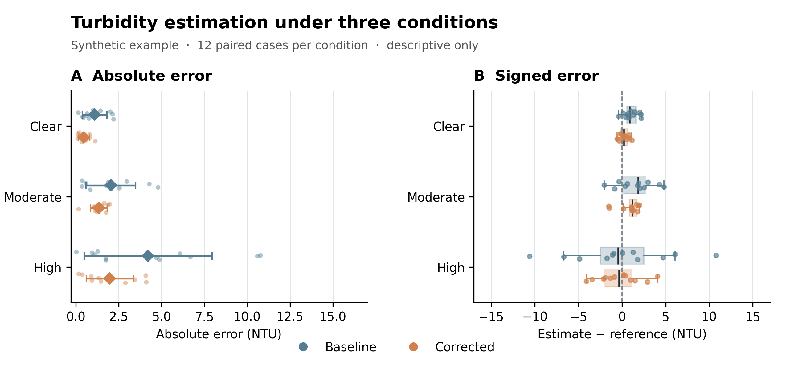

2026-10-01 · 10 类图 · 同一虚构研究主题：便携式河水浊度监测

清楚但较模板化；检查是否需要更专业的科研层次

光路与信号链清楚；装置为概念外观

已修正为 90° 侧向散射探测

模块关系清楚；当前是简化架构草图

清澈与浑浊对比；数值明确标为 illustrative

三段叙事完整；右侧曲线仅为概念符号

阶段关系清楚；版式较简化
无字视觉隐喻，不承担数据论证

模拟数据、误差棒与单位齐全

模拟数据，两面板误差视角互补